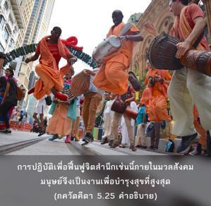

บุคคลผู้ที่อยู่เหนือสิ่งคู่ซึ่งเกิดจากความสงสัย จิตใจปฏิบัติอยู่ภายใน มีภารกิจมากเสมอเพื่อบำรุงสุขต่อมวลชีวิต และเป็นอิสระจากความบาปทั้งปวงจะเป็นผู้บรรลุถึงความหลุดพ้นอยู่ในองค์ภควานฺ

บุคคลผู้มีกฺฤษฺณจิตสำนึกอย่างสมบูรณ์เท่านั้นจึงจะกล่าวได้ว่าเป็นผู้ที่ปฏิบัติงานเพื่อบำรุงสุขต่อมวลชีวิต เมื่อมีความรู้อย่างแท้จริงว่าองค์กฺฤษฺณทรงเป็นแหล่งกำเนิดของสรรพสิ่งเขาจะปฏิบัติในสปิริตเช่นนี้เพื่อทุกๆคน ความทุกข์ของมนุษยชาติเกิดมาจากลืมว่าองค์กฺฤษฺณทรงเป็นผู้มีความสุขเกษมสำราญสูงสุด ทรงเป็นเจ้าของสูงสุดและทรงเป็นพระสหายสูงสุด ฉะนั้นการปฏิบัติเพื่อฟื้นฟูจิตสำนึกเช่นนี้ภายในมวลสังคมมนุษย์จึงเป็นงานเพื่อบำรุงสุขที่สูงสุด เราไม่สามารถปฏิบัติงานบำรุงสุขชั้นหนึ่งเช่นนี้ได้โดยปราศจากความหลุดพ้นอยู่ในองค์ภควานฺ บุคคลในกฺฤษฺณจิตสำนึกไม่มีความสงสัยเกี่ยวกับความสูงสุดขององค์กฺฤษฺณ ที่ไม่สงสัยเพราะเขาปราศจากความบาปทั้งปวงโดยสมบูรณ์นี่คือระดับแห่งความรักทิพย์
บุคคลผู้ปฏิบัติเพียงเพื่อจัดการบำรุงสุขทางร่างกายของสังคมมนุษย์ไม่สามารถช่วยผู้ใดได้อย่างแท้จริง การบรรเทาทุกข์ชั่วคราวต่อร่างกายภายนอกรวมทั้งจิตใจจะไม่ทำให้เกิดความพึงพอใจ สาเหตุที่แท้จริงของความยากลำบากในการดิ้นรนต่อสู้เพื่อชีวิตอาจพบได้จากการที่เขาลืมความสัมพันธ์ที่มีต่อองค์ภควานฺ เมื่อมนุษย์มีจิตสำนึกอย่างสมบูรณ์ในความสัมพันธ์กับองค์กฺฤษฺณผู้นั้นคือดวงวิญญาณที่หลุดพ้นอย่างแท้จริง แม้อาจจะอยู่ในร่างวัตถุ